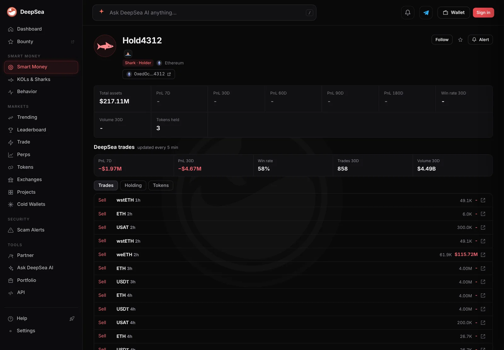

A shark 'sold' $220 million of staked ether. The chain shows a transfer to one wallet
DeepSea logged $115.7 million of weETH and $103.8 million of wstETH leaving one wallet. Blockscout shows no sale and no unwrap. The wallet paid down part of an Aave loan, then sent both tokens to a single address that still holds them.
Key points
- DeepSea shows the wallet ending in 4312 with $48.20 million in and $220.01 million out in 7 trades in the 24 hours to 6:34 a.m. ET on November 24.
- On November 23 it repaid about 18,983 WETH of Aave debt and withdrew 25,000 weETH from Aave, Blockscout shows. That is the $48.2 million in.
- At 4:50 and 4:51 a.m. ET on November 24 it sent 61,851.01 weETH and 49,084.41 wstETH to one unlabeled address, which still held both an hour later.
 What DeepSea's data shows
What DeepSea's data shows
DeepSea's 24-hour flow table, built at 6:34 a.m. ET on November 24, lists the shark wallet ending in 4312 with $48.20 million bought and $220.01 million sold in 7 trades. It is the second-biggest Ethereum shark by volume in the table.
Two token lines carry it. weETH, ether.fi's staked ether token, shows $48.20 million in and $115.72 million out. wstETH, Lido's staked ether token, shows $103.79 million out, all from one wallet.
DeepSea counts tokens leaving a wallet as sells. Its wallet page, named Hold4312, lists two 49.1K wstETH sells and a 6.0K ETH sell; the explorer shows one wstETH line and the ETH line are lookalike tokens with no holders. So we checked where the real tokens went.

Data: DeepSea (desea.io), checked November 24, 2026, 6:34 a.m. ET.
The loan came first
Blockscout's transfer list shows three rounds on Monday, November 23. At 12:01 p.m. ET the wallet burned 8,877.50 of Aave's WETH debt tokens, which means it repaid that much borrowed ether, and a minute later it withdrew 11,700 weETH from Aave. At 1:56 p.m. it repaid 1,709.96 WETH and withdrew 2,500 weETH. At 4:47 p.m. it repaid 8,395.28 WETH and at 4:49 p.m. withdrew 10,800 weETH.
That is about 18,983 WETH repaid and 25,000 weETH taken back, which matches DeepSea's $48.2 million in. Etherscan says the wallet was first funded from an address it labels Kraken 4.
Then one big transfer
At 4:50 a.m. ET on Tuesday the wallet sent 61,851.01 weETH to one address, and at 4:51 a.m. 49,084.41 wstETH to the same one. Both were plain token transfers. No DEX swap and no unwrap into ether appears.
The receiver has no name or tag on Blockscout. Its balances still showed the full 61,851 weETH and 49,084 wstETH about an hour later. At CoinGecko's 6:45 a.m. prices, $1,872.40 for weETH and $2,112.21 for wstETH, that is about $115.8 million and $103.7 million.
Minutes after the transfer, Blockscout shows zero-value weETH and wstETH transfers from the wallet to a lookalike address with the same first and last characters, then tokens named wstETH and ETH with no holders sent the same way. The receiver's own list shows similar lookalike traffic.
Wallet 4312: staked ether in and out (tokens)
thousand tokens
Source: Blockscout token transfers

LC Insight analysis
This section is our reading of the facts above, not a statement of fact.
- We think this was a holder moving staked ether between its own wallets or to a custodian, not a sale: nothing was swapped, and the receiver kept the tokens. The chain does not prove who controls the receiver.
- The zero-value and fake-token transfers to a lookalike address fit a known scam called address poisoning, which hopes a sender copies the wrong address from its history next time.
- Paying down an Aave ether loan as ether trades near $1,690 lowers the wallet's risk of liquidation, the forced sale of collateral when prices fall.
What's next
- Whether the receiving address moves the weETH and wstETH on, unstakes or sends them to an exchange.
- Whether the wallet keeps repaying its Aave WETH debt.
- Any transfer that goes to the lookalike address instead of the real one.
Disclaimer. This article is based on public information and the sources listed below as of the update time shown. It is for information only and is not investment, legal or tax advice. Figures may change as companies and authorities publish new data.
Sources
- DeepSea, 24-hour shark flows by token and wallet (built November 24, 2026, 6:34 a.m. ET)
- DeepSea, wallet page ending in 4312 (read November 24, 2026)
- Blockscout, token transfers of the wallet ending in 4312 (read November 24, 2026, 6:45 a.m. ET)
- Blockscout, receiving address ending in F66d: details, balances and transfers (read November 24, 2026, 6:55 a.m. ET)
- Etherscan, address ending in 4312 (read November 24, 2026)
- CoinGecko, weETH, wstETH and ETH prices (November 24, 2026, 6:45 a.m. ET)